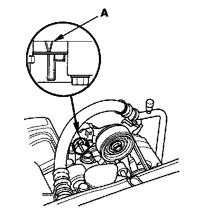
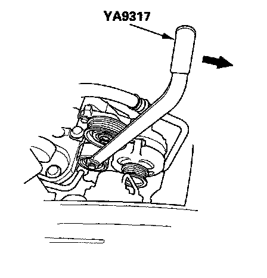
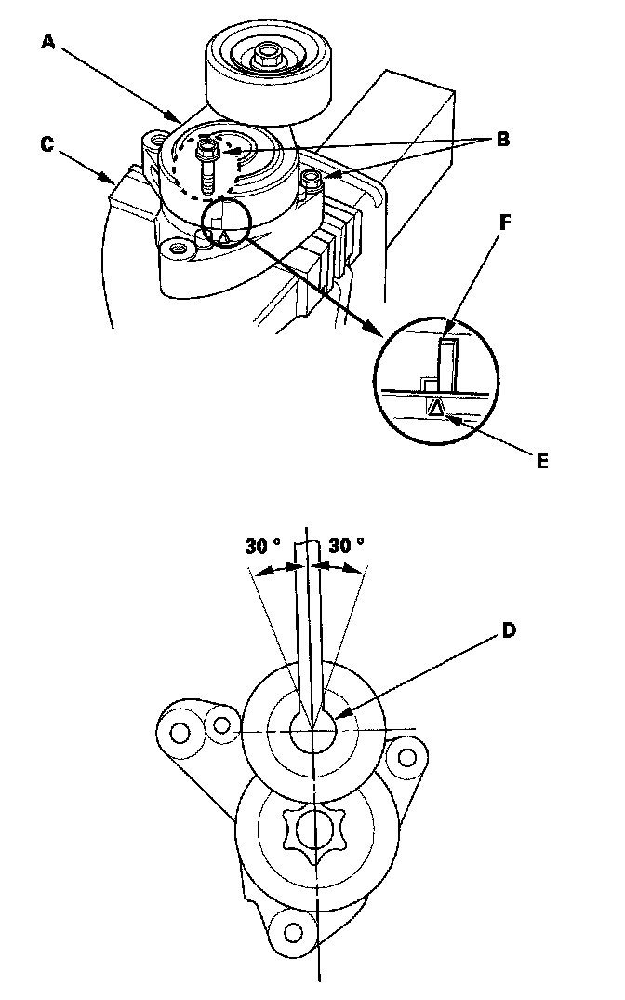

Drive Belt Tensioner: Testing and Inspection
Drive Belt Auto-tensioner InspectionSpecial Tools Required
Belt tension release tool Snap-on YA9317 or equivalent, commercially available
1. Turn the ignition switch ON (II), and make sure to turn the A/C switch OFF. Turn the ignition switch OFF.

2. Check the position of the auto-tensioner indicator's pointer (A). Start the engine then check the position again with the engine idling. If the position of the indicator moves of fluctuates a lot, replace the auto-tensioner.
3. Check for abnormal noise from the tensioner pulley. If you hear abnormal noise, replace the tensioner pulley.
4. Remove the drive belt.

5. Move the auto-tensioner within its limit using the belt tension release tool in the direction shown. Check that the tensioner moves smoothly and without any abnormal noise. If the tensioner does not move smoothly, or you hear abnormal noise, replace the auto-tensioner.
6. Remove the auto-tensioner.

7. Clamp the auto-tensioner (A) by using two 8 mm bolts (B) and a vise (C) as shown. Do not clamp the auto-tensioner itself.
8. Set the torque wrench (D) in the pulley bolt in the direction shown.
9. Align the indicator (E) on the tensioner base with center mark (F) on the tensioner arm by using the torque wrench, and measure the torque. If the torque value is out of specification, replace the auto-tensioner.
NOTE: If the indicator exceeds the center mark, recheck the torque.
Auto-tensioner
Spring Torque: 32.5-39.7 N.m (3.31-4.05 kgf.m, 23.9-29.3 lbf-ft)